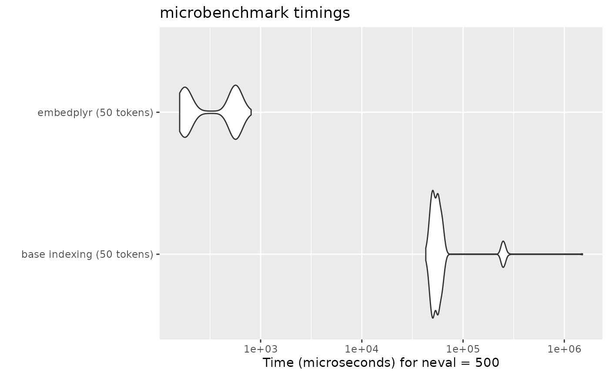

Performance Benchmark
performance.RmdWhereas indexing a regular matrix by rownames gets slower as the
number of rows increases, embedplyr’s hash table indexing means that
token embeddings can be retrieved in roughly constant time. The
following test uses glove.twitter.27B.25d, which has 1.2
million rows (by no means the largest model available).
glove_embeddings <- load_embeddings("glove.twitter.27B.25d", save = FALSE)
#> Reading file from the Internet...
glove_matrix <- as.matrix(glove_embeddings)
# 50 randomly sampled tokens
tokens <- rownames(glove_embeddings)[sample(seq_len(nrow(glove_embeddings)), 50)]
bm1 <- microbenchmark(
"base indexing (50 tokens)" = glove_matrix[tokens,],
"embedplyr (50 tokens)" = glove_embeddings[tokens,],
times = 500
)
autoplot(bm1)
When retrieving many token embeddings (e.g. when analyzing a set of texts), this can make a noticeable difference.